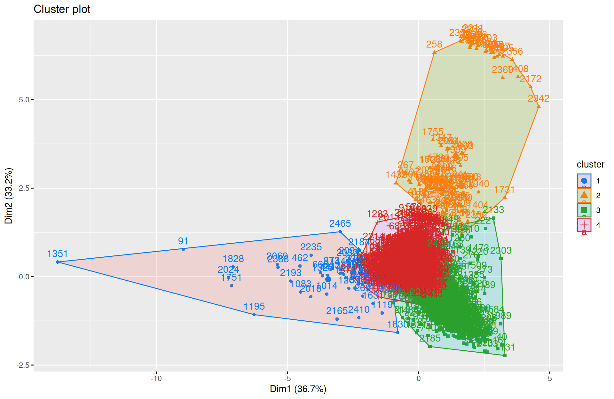
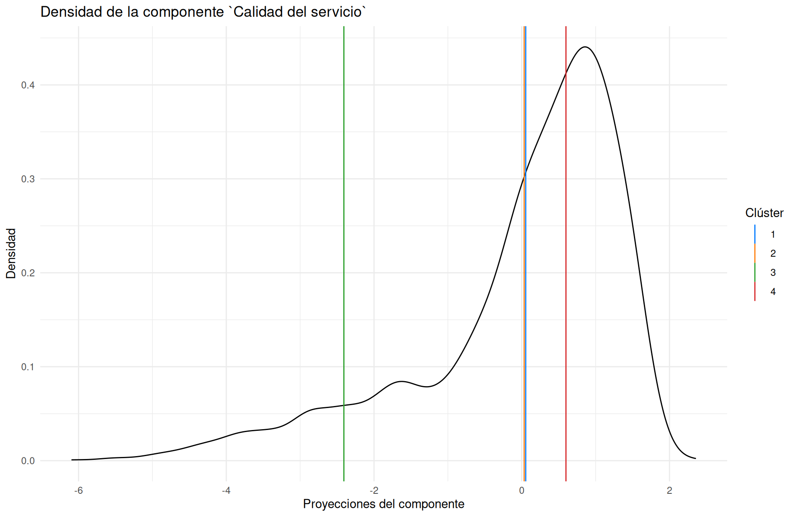
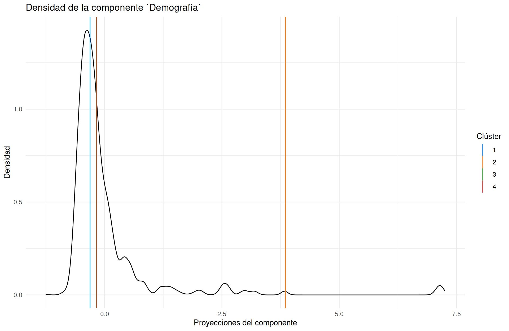

Segmentación de clientes
- Usando la información del archivo ejercicio_2.csv realizar una segmentación de clientes. Explicar los procedimientos.
Para este proceso podemos realizar métodos de aprendizaje no supervisado para encontrar grupos que tengan características similares y podamos segmentar a los clientes según sus necesidades, de esta manera haremos un reducción de la dimensionalidad con componentes principales y luego haremos un clustering por medio de k-means, donde solo consideraremos variables numéricas.
## spc_tbl_ [2,500 × 10] (S3: spec_tbl_df/tbl_df/tbl/data.frame)
## $ negocio_id : num [1:2500] 0 1 2 3 4 5 6 7 8 9 ...
## $ porc_crecimiento_anual: num [1:2500] 0.416 0.318 0.804 0.188 0.172 ...
## $ calificacion_desempeno: num [1:2500] 0.855 0.495 0.355 0.895 0.745 0.695 0.535 0.945 0.725 0.705 ...
## $ anaquel_competencia : num [1:2500] 0 1 0 0 1 0 0 1 1 0 ...
## $ anaquel_negocio : num [1:2500] 2 2 3 3 2 3 2 3 3 2 ...
## $ respeto : num [1:2500] 1 0 0 1 0.75 1 1 1 1 1 ...
## $ poblacion_zona_negocio: num [1:2500] 1905 8098 3925 3094 8098 ...
## $ clase_negocio : chr [1:2500] "B" "B" "B" "A" ...
## $ ingreso_promedio_m : num [1:2500] 8373 6612 4078 6985 16907 ...
## $ enfriador : num [1:2500] 1 1 1 1 1 1 1 1 1 1 ...
## - attr(*, "spec")=
## .. cols(
## .. negocio_id = col_double(),
## .. porc_crecimiento_anual = col_double(),
## .. calificacion_desempeno = col_double(),
## .. anaquel_competencia = col_double(),
## .. anaquel_negocio = col_double(),
## .. respeto = col_double(),
## .. poblacion_zona_negocio = col_double(),
## .. clase_negocio = col_character(),
## .. ingreso_promedio_m = col_double(),
## .. enfriador = col_double()
## .. )
## - attr(*, "problems")=<externalptr>
## NULLPor lo tanto no consideramos a las columnas: negocio_id, anaquel competencia, anaquel negocio, clase_negocio y enfriador, pues algunas son variables categóricas nominales u ordinales e impiden que podamos hacer una segmentación correcta, además retiramos cualquier NA que pueda haber en el dataset.
De esta manera, al utilizar la función principal, obtenemos los componentes principales de las variables de nuestro dataset, consideramos una rotación varimax pues nos facilita la interpretación de los componentes resultantes
Notemos rápidamente que estos 3 componentes tienen características en común y los podemos agrupar en una “etiqueta” según corresponda su giro:
Componente 1: Calidad de servicio, aquí tenemos a las variables calificacion_desempeno y respeto, las cuales las podemos asociar a una percepción de la calidad en el servicio que el negocio brinda, donde al tener un mayor valor sobre este componente se asociaría a una mejor percepción de la calidad del servicio.
Componente 2: Crecimiento del negocio, aquí tenemos las variables porc_crecimiento_anual e ingreso_promedio_m, las cuales se asocian al crecimiento en los ingresos que el negocio percibe, donde un mayor valor en este componente se asociaría a un mayor crecimiento en los ingresos del negocio.
Componente 3: Demografia, aquí solo tenemos una sola variable, la cual es poblacion_zona_negocio, esta variable mide la cantidad de población que se encuentra en la zona del negocio, donde un mayor valor en este componente se asociaría a una mayor cantidad de población en la zona del negocio.
Con estas 3 componentes tenemos un total de 71% de varianza explicada sobre el total de los datos.
## RC1 RC2 RC3
## 28.03456 50.97494 71.00624Ya que tenemos los componentes, podemos asignar a cada negocio su valuación sobre cada uno de estos componentes:
Para realizar el proceso de clustering, habremos de determinar la cantidad de clusters que se ajusten mejor a nuestros datos, para ello utilizaremos el método de la silueta, el método de la distancia de Kullback-Leibler, el método de Calinski-Harabasz, el método de Dunn, el método de Hartigan, el método de Rubin, el método de Scott, el método de C-Index, el método de Ball, el método de Tracew y el método de la traza de Wilks.
set.seed(211124)
indices <- c("silhouette", "kl", "ch", "dunn", "hartigan", "rubin", "scott", "cindex", "ball", "tracew")
result_df <- data.frame(Index = character(), Optimal_k = integer(), stringsAsFactors = FALSE)
for (index in indices) {
result <- NbClust(proyecciones, distance = "euclidean", method = "kmeans", max.nc = 6, index = index)
optimal <- result$Best.nc[1]
result_df <- rbind(result_df, data.frame(Index = index, Optimal_k = optimal, stringsAsFactors = FALSE))
}
result_df <- result_df[order(result_df$Optimal_k), ]
result_df <- result_df %>%
group_by(Optimal_k) %>%
summarize(Indices = paste(Index, collapse = ", "), .groups = "drop")
result_df## # A tibble: 3 × 2
## Optimal_k Indices
## <dbl> <chr>
## 1 3 ball
## 2 4 silhouette, dunn, hartigan, rubin, scott, tracew
## 3 6 kl, ch, cindexAsí obtenemos que la mayoría de los indices nos indican hacer k-means con 4 clusters, por lo que procederemos a realizar el clustering con 4 clusters.
Una vez realizado el modelo, podemos agrupar a los negocios según el clúster al que pertenecen y obtener las medias de cada clúster en sus componentes principales.
medias <- proyecciones %>% group_by(modelo_k$cluster) %>% summarise_at(vars(-group_cols()), mean)
medias## # A tibble: 4 × 4
## `modelo_k$cluster` RC1 RC2 RC3
## <int> <dbl> <dbl> <dbl>
## 1 1 0.0535 5.46 -0.311
## 2 2 0.0324 -0.126 3.85
## 3 3 -2.41 -0.285 -0.178
## 4 4 0.598 -0.0684 -0.169Observemos los clusters en un gráfico sobre las 2 componentes principales (Es importante notar que hace falta la tercera componente)

Por ultimo interpretemos los clusters en función de las medias obtenidas, para esto observemos las gráficas de las densidades de cada componente y las medias obtenidas en cada clúster.
ggplot() + geom_density(mapping = aes(x = proyecciones$RC1)) + geom_vline(mapping = aes(xintercept = medias$RC1, colour = as.factor(medias$`modelo_k$cluster`))) + labs(title = "Densidad de la componente `Calidad del servicio`", color = c("Clúster"), x = "Proyecciones del componente" , y = "Densidad") + scale_color_manual(values = PALETA)
ggplot() + geom_density(mapping = aes(x = proyecciones$RC2)) + geom_vline(mapping = aes(xintercept = medias$RC2, colour = as.factor(medias$`modelo_k$cluster`))) + labs(title = "Densidad de la componente `Crecimiento del negocio`", color = c("Clúster"), x = "Proyecciones del componente" , y = "Densidad") + scale_color_manual(values = PALETA)ggplot() + geom_density(mapping = aes(x = proyecciones$RC3)) + geom_vline(mapping = aes(xintercept = medias$RC3, colour = as.factor(medias$`modelo_k$cluster`))) + labs(title = "Densidad de la componente `Demografía`", color = c("Clúster"), x = "Proyecciones del componente" , y = "Densidad") + scale_color_manual(values = PALETA) Así con esto tenemos que:
El clúster 1 tiene una baja percepción en la calidad del servicio, cuenta con una alta tasa en el crecimiento del negocio y se encuentra en zonas con muy baja densidad poblacional. Lo ideal para este grupo de negocios sería buscar estrategias para mejorar la percepción en la calidad de sus servicios, además de buscar estrategias para atraer a más clientes a sus negocios aprovechando la baja densidad poblacional.
El clúster 2 tiene una baja percepción en la calidad del servicio, un bajo crecimiento en el negocio y se encuentra en zonas de alta densidad poblacional, este grupo de negocios se debería de enfocar en buscar mas clientes aprovechando su alta posibilidad de clientes para mejorar sus ingresos y a la par mejorar los servicios que ofrece para aumentar su buena percepción por parte del usuario.
El clúster 3 tiene una muy baja percepción en la calidad de su servicio, un muy bajo crecimiento en el negocio y se encuentra en zonas con densidad poblacional baja, este tipo de negocios debe de buscar de manera urgente mejorar su percepción en la calidad de sus servicios, pues de otra manera la baja densidad poblacional lo someterá a un mayor estrés financiero.
El clúster 4 tiene una alta percepción en la calidad de su servicio, un bajo crecimiento del negocio y se encuentra en zonas con baja densidad poblacional, este tipo de negocios debe de buscar atraer a nuevos clientes que aprovechen su buena calidad de servicio para aumentar sus ganancias.